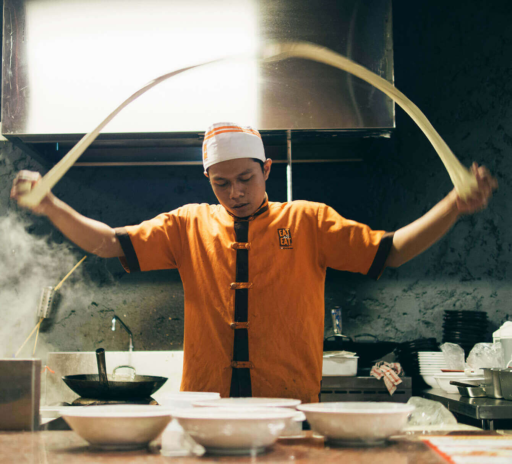

<section id="about-us" class="section-aboutus">
  <div class="container">
    <div class="row">
      <div class="aboutus__wrapper-text col-10 offset-1 col-md-6 offset-md-0">
        <h2 class="section__title section__title--red">O nas</h2>
        <h3 class="section__subtitle section__subtitle--white">Dowiedz się więcej</h3>
        <p class="aboutus__content"><i>Nami</i> to japońska restauracja, dzięki której odbędziesz kulinarną podróż do
          Japonii. To co nas wyróżnia, to prawdziwe japońskie dania, przygotowane ze świeżych i starannie dobranych
          składników. <br><br> W naszej restauracji pracują ludzie z <span class="aboutus__content--highlighted">pasją</span>.
          Szefem kuchnii jest Yamamoto Moritake, który postanowił podzielić się wszystkim co najlepsze w kraju
          Kwitnącej Wiśni. Tym samym z Nami nasi Goście mogą liczyć na niezapomniane doznania - smakowe, jak i
          wizualne.</p>
      </div>
      <div class="aboutus__wrapper-image col-10 offset-1 col-sm-8 offset-sm-2">
        <div class="aboutus__image">
          <div>
          
        </div>
        </div>
      </div>
      <div class="aboutus__text-value text-value">pasja</div>
    </div>
  </div>
</section>